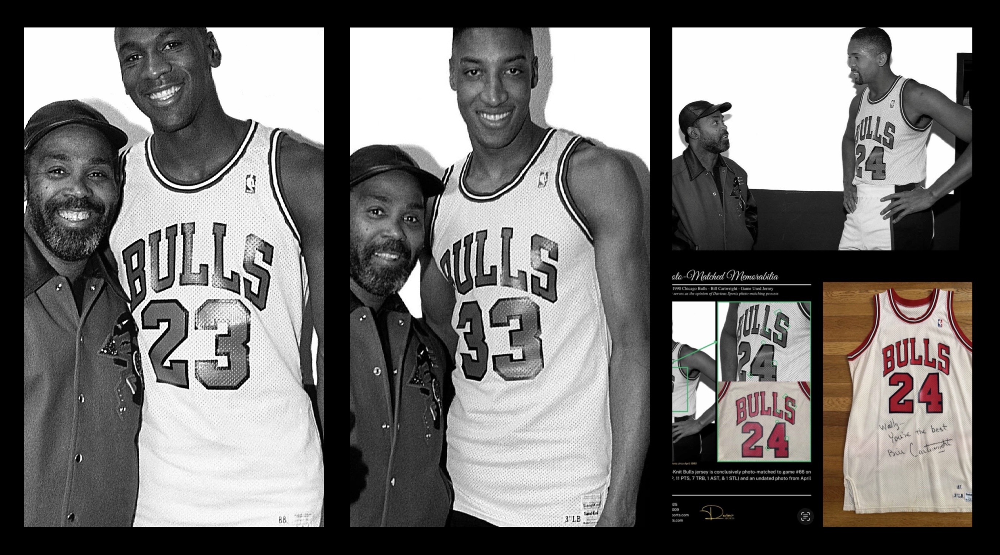
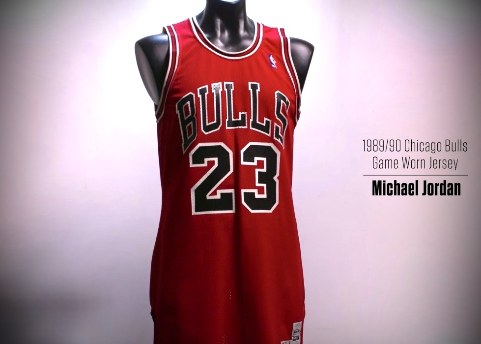
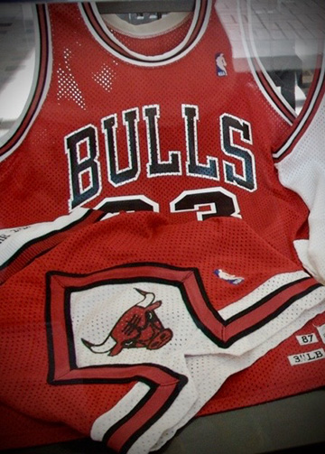

UNIFORM INVENTORY AND CARRYOVER IN THE LATE 1980's
When examining Michael Jordan’s game-worn jerseys, it is easy to assume that the uniforms worn in a given season were produced specifically for that year. In reality, archival research often reveals a far more complicated story.
While studying imagery and artifacts connected to the 1989–90 Chicago Bulls season, a pattern slowly began to emerge. Several jerseys worn during that season appear to originate from earlier Sand-Knit production runs.
One revealing moment comes from a team photo session following an April 1990 Bulls game. In the photographs from that session, three players can be seen wearing white home uniforms. At first glance they appear identical, but a closer examination of their tagging and construction tells a different story.

Scottie Pippen appears in a jersey consistent with 1986–87 Sand-Knit production. Standing nearby, Michael Jordan is wearing a home jersey tagged for 1988–89. In another image from the same session, Bill Cartwright is seen wearing a home uniform tagged for the 1987–88 production year.
In a single moment captured late in the season, three different players appear to be wearing jerseys originating from multiple production cycles.
Evidence of this inventory overlap is not limited to team photography.
Additional evidence comes from two red road jerseys worn by Michael Jordan during the 1989–90 season. One example has surfaced publicly and has been conclusively photo-matched to game imagery from that year. Together with a second jersey documented through archival photography, the two garments account for more than thirty games of identifiable wear during the season.

What makes these artifacts particularly interesting is their tagging. One jersey carries 1986–87 Sand-Knit production tagging, while the second originates from the 1987–88 production cycle.
The second road jersey is documented here for the first time. Tagged for the 1987–88 Sand-Knit production cycle, the garment can be identified through a photograph that has remained in the author’s archival image collection for more than a decade.
Neither the jersey nor the photograph has previously been published. The existence of the photographic match has not been disclosed until now. The image reveals structural characteristics that align directly with the artifact and confirm that the jersey remained in active use during the 1989–90 season.
To the author’s knowledge, this represents the first documented example in which a Chicago Bulls road jersey from an earlier Sand-Knit production cycle can be identified by its manufacturing tag and verified through photographic comparison as having remained in use two seasons later.

Taken together, these five pieces of evidence suggest that the Chicago Bulls’ uniform inventory during this period likely included garments produced across several prior seasons. When a team’s uniform design remained unchanged, earlier jerseys could continue to circulate alongside newer stock.
For collectors and researchers, this nuance carries an important implication. In this instance, the year printed on a Sand-Knit jersey tag does not necessarily correspond to the season in which the jersey was worn. Instead, the tag reflects the garment’s production cycle, which may precede its appearance on the court by several seasons.
An additional nuance can be seen in jerseys tagged for the 1989–90 Sand-Knit production cycle itself. Several examples have surfaced publicly that appear consistent with Chicago Bulls team stock from the period. However, none of these jerseys have been conclusively photo-matched to game imagery from the 1989–90 season. Their existence reinforces the importance of photographic verification when evaluating game-worn artifacts. While production tagging can provide valuable context, it does not by itself establish that a jersey was worn during a specific season.
For collectors and researchers alike, it is often these small details that make the study of Michael Jordan’s game-worn jerseys so rewarding.
Research note: This article is part of the Michael Jordan Archive's ongoing documentation of early Chicago Bulls uniforms and the photographic record surrounding Michael Jordan’s game-worn jerseys.